인터뷰: 유승아
<
유승아는 큐레이터입니다. 그녀는 자신에게 있어 큐레이팅이란 ‘매번 다른 시공간에 놓여 질문을 만들고, 수정하고, 주저하며, 장면을 찾아가는 일’이라고 말합니다. 자신이 긴 시간 돌봐온 질문이 관객에게 아름다움이란 앎으로 가닿기를 바라면서요. 당신이 온전하다고 믿어 온 세계를 어느샌가 점유해 그 언저리에 있을 당신의 몸/마음이 움직이는 것, 그녀가 예술을 통해 바라보는 작은 정치성입니다.
잠재성과 초여름의 심상을 펼쳐보인 《Summerspace》에 이어 일상적 정동으로부터 위태로운 세계 속 개인의 취약함을 전경화한 ⟪마야माया⟫를 선보인 그녀는, ‘마야माया’와 동형의 이야기를 품은 또다른 전시 ⟪바닐라⟫를 올 여름에 세워뒀습니다. 서울 속에 떠오른 작은 모래돌섬 같았던 전시에 방문한 재훈은 유승아가 골똘히 생각하며 시간을 보냈을 ‘바닐라’의 정치성, 여성적 글쓰기, 종말, 작품 돌봄 등에 관한 10가지 질문을 그녀에게 던집니다.
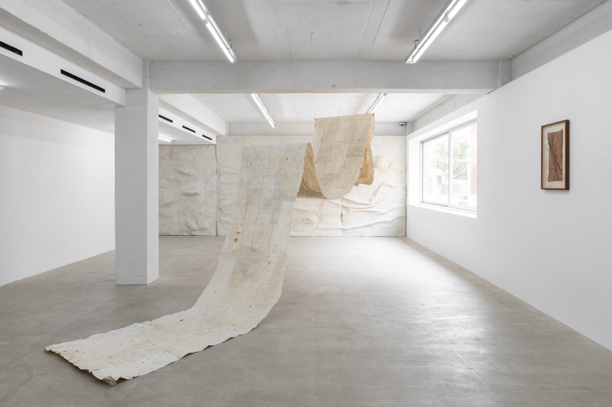
Q1. 재훈: 전시 《바닐라》를 이루는 세 작가를 처음 알게 된 계기와, 함께 해야겠다고 결심한 시점이 궁금합니다.
유승아: 저는 작가 리서치를 꽤 성실하게 하는 편인데요. 시각적인 뉘앙스나 다루는 감각의 결이 저와 맞닿아 있다고 느껴지면, 작가와 작업을 따라가요. 그 과정에서 포트폴리오를 요청드리기도 하며 연구하고요. 그렇게 만난 작업들을 충분한 시간 동안 제 안에서 소화하고, 생각을 키우는 과정을 거쳐요. 때로는 다른 작업들과 서로 나란히 두고 바라보기도 하고요. 그러다 문득 내가 무언가를 말할 수 있고, 또 말해야만 한다는 계시적인 순간이 다가오면 본격적으로 전시를 준비하기 시작하는데요. 가장 먼저 한 명의 작가를 임의의 시작점으로 세워두고, 그와 매체를 달리하면서 이미지적으로 혹은 뉘앙스적으로 동형성을 이루는 작가들을 엮는 방식으로 전시의 장면과 분위기를 구체화하는 것 같아요. 《바닐라》의 세 참여 작가를 알게 되고, 함께해야겠다고 결심한 과정 역시 이 방식의 흐름 속에 있고요.
Q2. 재훈: 《바닐라》에 대한 감상은 본 전시의 소리 풍경을 담당하는, 미리암 찰스의 영상 작업 <새로운 세계를 위한 노래>를 마주한 순간 전후로 달라지는 듯합니다. 과거에 대한 향수와 상실감을, 마치 관객을 다른 나라에 데려가듯, 노래하는 영상의 화자는 아이티 크리올어(Haitian Kreyòl)를 사용하지요. "프랑스어를 기반으로 아프리카 언어, 타이노어, 스페인어, 포르투갈어 등의 요소가 혼합되어 형성된 아이티 크리올어"는 프랑스 피식민지인들의 정체성을 바탕으로 두고 있습니다.
아타랑이 앤더슨의 작품 설명 글과 캡션에도 ‘마타(Mata)’, ‘아우테(Aute)’, ‘파티키(Pātiki)’ 등의 마오리어가 국역되지 않은 채 설명을 병기하는 방식으로 쓰여있는데요. 관객으로서 저는 모르는 단어를 하나하나 찾아보는 검색의 재미를 느낄 수 있었습니다. 큐레이터님께 《바닐라》의 준비 과정은 익숙지 않은 문화권에서 얻는 배움의 순간들의 연속이기도 했을 거란 짐작이 드는데요. 그중 나누고 싶은 받아드림, 알아차림, 깨달음 등이 있다면 소개 부탁드립니다.
유승아: 이번 전시는 어느 때보다 서울을 기반으로 살아온 제 세계가 낯설어지는 경험을 많이 했어요. 특히 아타랑이와는 이메일을 주고받는 내내 키아오라(Kia ora)와 응아 미히 누이(Ngā mihi nui)라는 인사말을 쓰고, 그의 작업 세계를 이해하기 위해 마오리 사전으로 단어의 의미를 하나하나 찾았던 기억이 있어요.
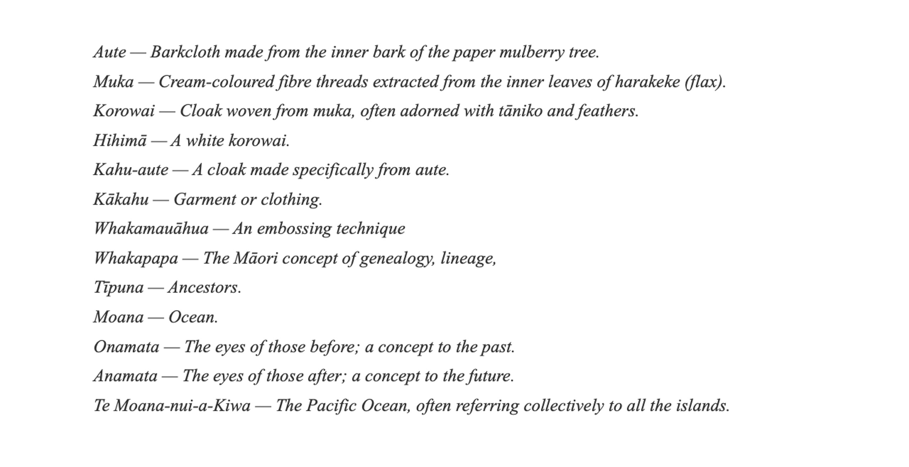
또 7미터 길이의 신작을 제작하는 과정에서는 자신이 오랫동안 가꾸어 온 아우테 숲이 개발로 철거될 위기에 놓여 있다는 이야기를 들려주며, 풍요와 해방의 의미가 무엇인지 고민하게 되었다는 아타랑이의 말이 오래 기억에 남아요. 작업 과정에서는 친구들이 아우테 나무껍질을 고르게 펴기 위해 두드리고 있는 사진, 껍질들을 하나하나 붙이고 있는 사진들도 보내주었는데요. 사진들을 처음 마주 보았을 때 느꼈던, 함께함의 감각과 경이는 아마 잊지 못할 것 같아요. 그의 작업 과정을 따라가며, 미술에 깃든 돌봄과 책임과 같은 윤리적인 가치가 결코 추상적이거나 피상적이지 않을 수 있는 거구나, 깨달았죠.
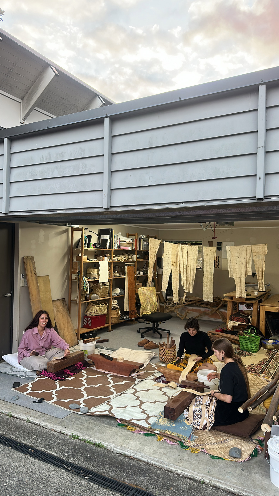
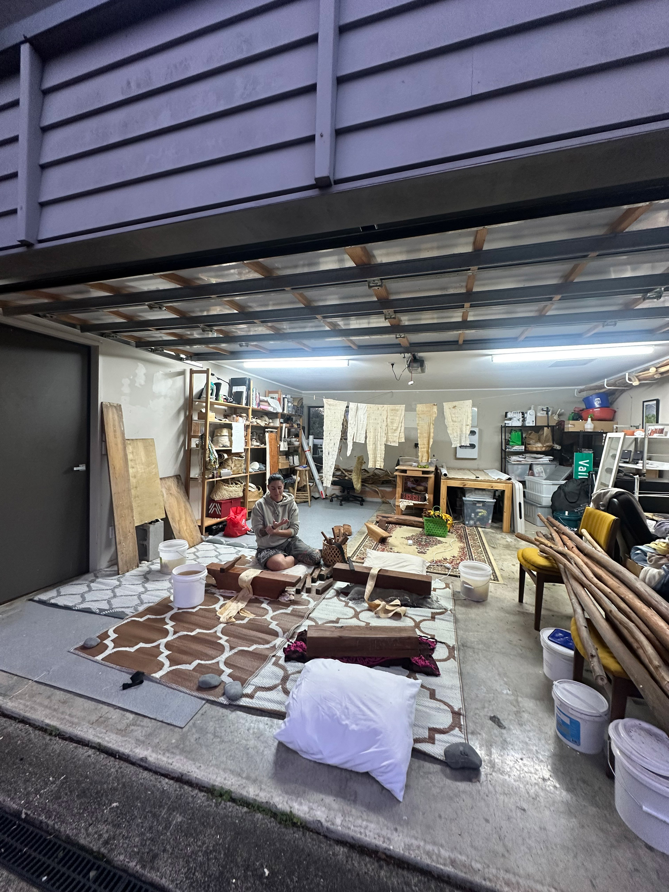
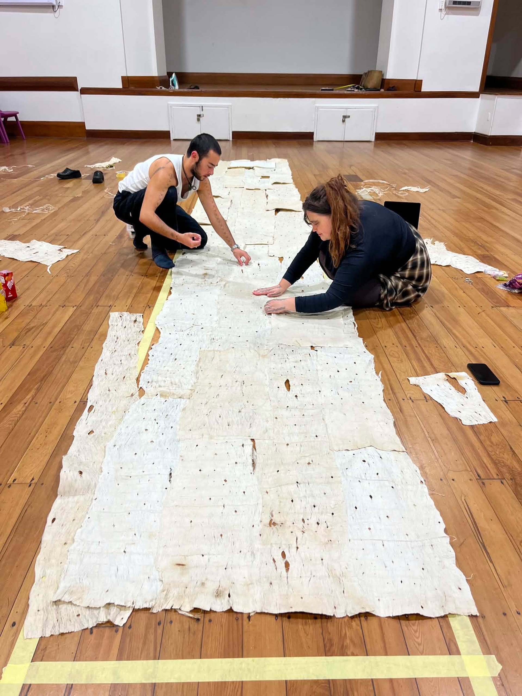
또 마오리인로서 자신의 깨달음을 강한 어조로 전해 주었던 아타랑이의 다음 문장들은 꾸준히 떠올리게 될 것 같아요. “Being Māori, like many other Indigenous peoples, means we have already lived through the apocalypse of our peoples, lands, and culture. Now, we are in a state of re-remembering — navigating a post-colonial, post-apocalyptic landscape. / The Western world’s obsession with “the end” perhaps comes from its history of ending other worlds — of cultures, lands, and peoples across the globe.”
돌이켜 보면 《마야》에서도 마찬가지로 내 세계가 부서졌다는 감각에 관해 이야기한 경험이 있었는데요. 당시에는 90년대생 한국 작가들의 작업을 통해 그 감각을 뾰족하게 날 세워보고 싶었다면, 이번에는 우리의 공통된 감각이 전혀 다른 위치에서 생성될 수 있다는 사실을 배울 수 있었던 것 같아요. 미리암과 아타랑이는 각각 아이티와 마오리 원주민 공동체의 맥락에서 디아스포라와 상실, 애도, 그리고 세계를 잃어버렸다는 감각을 이야기하거든요. 《마야》와 《바닐라》 모두 내 세계가 부서졌다는 공통의 감각에서 부터 시작했지만 그 언어가 출발하는 자리와 품고 있는 역사, 그리고 몸으로 감각되는 깨달음이 전혀 다를 수 있다는 사실을 새롭게 이해하게 되었죠. 그래서 저는 《마야》와 《바닐라》가 서로 다른 생김새를 타고난 쌍둥이라 느껴요.
Q3. 재훈: 종말론적 시대 상황에 주목한다는 점에서 본 전시는 《마야माया》의 연장선상에 놓인 것으로 보이기도 합니다. 하지만 종말을 ‘인간의 존재, 지식, 감각의 한계가 드러나는 곳’으로 더 너르게 정의하는 거시적인 시선도 눈에 띄는데요. 같은 맥락에서 본 전시를 이루는 작품들을 기표로 단순화했을 때 나무껍질, 해안가의 표면, 눈동자, 상실로 축약될 수 있다는 점도 언급할 만합니다. 이러한 종말론적 공간을 어떻게 타자성이 발현되는 곳으로 인식하게 되었는지 여쭙습니다.
유승아: 종말론적 공간은 저에게 죽음과 유비를 이뤄요. 죽는. 끝장난. 잃어버림. 상실된. 이런 존재론적 한계들은 저로 하여금 저라고 여겨지는 어떤 물성 또 시공간과 불화하도록 만드는 것 같아요. 화해하지 못하고, 어긋나고, 미끄러지는 감각 같은 것들이요. 그런 순간에 비로소 나를 하나의 거울상처럼 바라보게 되는데요. 나를 대상화하고, 타자화하는 경험이라고 할 수도 있고요. 생각해 보면 이건 제 최초의 미술 관심사였던, 불화하는 장소로서의 몸과도 맞닿아 있어요. 몸은 나의 것이라 믿는 물질이면서도, 끝끝내 내가 나임을 질문하게 만드는 장소이기도 하잖아요. 저는 종말론적 공간 역시 그런 장소라고 생각해요. 최초의 타자인 나를 비롯해, 다른 타자들의 사실 현실 진실에 관해 생각할 수 있게 되는 곳이요. 저는 이 깨달음이 어쩌면 내가 아무것도 아님(nothingness)을 기억하는 일이라고 생각하기도 해요. 존재론적 한계를 기억하는 일로부터 저를 비롯한 존재들이 조금은 더 겸허해질 수 있고, 자기 자신을 중심으로 두지 않게 되는 것 같아요. 그래서 저에게 죽음이나 상실, 종말은 끝이라기보다 타자를 상상하는 하나의 조건이 되는 것 같아요.
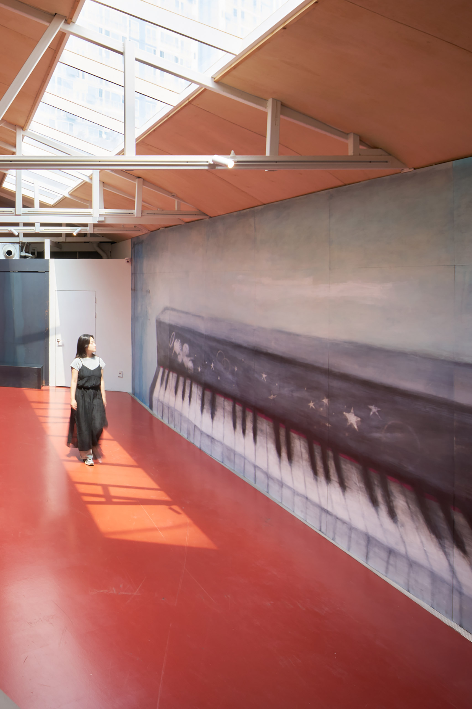
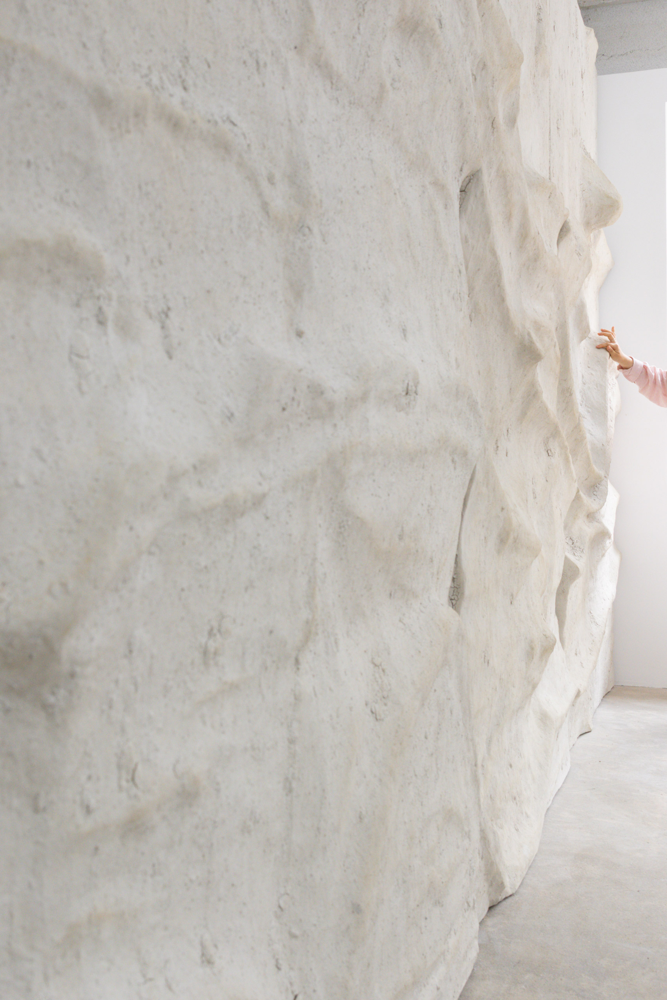
Q4. 재훈: 전시 서문의 첫 문장, ‘바닐라는 뜻밖의 정치적인 단어다.’에 관한 해설을 부탁드립니다.
유승아: 바닐라의 정치성이란, 나도 모르게 나에게 녹아버린 것들이에요. 가장 수동적인 방식으로, 생각지도 못한 사이, 나에게 연루되어 버리고야 만 것들이죠. 나의 상실이 너의 잃어버림과 맞닿아있고 나의 위로가 너의 애도에 기인하는. 인간의 연약한 연질로 인해 불가피하게 발생하는 사건들에 당신은 이미 책임이 있다. 필수불가결한 얽힘을 저는 ‘작은 정치, 작은 윤리’라 정의하고 있어요. 저는 이 대답을 적으며 자살한 친구를 떠올리는데요. 그 친구가 외양적으로도 저와 무척 닮아 있어서 그런지 제 삶이, 혹은 저의 과거가, 그 친구의 미래라는 생각을 하거든요. 더 나아가 제 생 자체가 애도의 행위다라는 생각까지도 하게 되는 것 같아요.
재훈: 미학의 정치적 가능성에 관해 이해하시는 바가 있다면 더불어 들어보고 싶습니다.
유승아: 제가 지금의 시점에서 믿는 미학의 정치성이란, 아름다움이라는 앎이에요. 제가 매번 되새기는 말이기도 한데요. 제가 앎이라는 아름다움을 추구하는 궁극적인 목표는 미학적인 것을 감지하는 순간을 통해서 이 세계를 다르게 바라보는 인식의 틀을 생성하고자 함이에요. 제가 정의하는 정치성이란 온 세상을 뒤흔드는 시끄러운 것은 아닌데요. 그저 당신이 온전하다고 믿어 온 세계를 고스란히 점유해 그 순간으로부터 가깝거나 먼 미래에 당신의 몸 또는 마음이 움직인다면, 저는 그것을 작은 정치성이라고 보는 것 같아요. 아주 소박하지만, 굉장히 귀하죠.
조금 더 구체적으로 말하자면, 저는 여성주의, 돌봄, 느림과 같은 태도를 말하고 싶은데, 이 태도를 다루는 명징한 담론들은 연대나 보편성, 올바름, 단일한 해방 서사로 쉽게 전락해 버리려는 욕망이 웅크리고 있는 것 같아요. 또 사실 제가 지향하는 태도가 늘 정의로운 결과만 산출하는 것은 아니잖아요. 자유와 해방을 추구할 때조차도 계급적 경계를 공고히 할 수 있으니까요. 내가 모르는 사이 또 다른 누군가의 배제나 불평등이 강화되는 경우도 있고요. 그래서 저는 미술을 통해 그 태도와 가치들이 지닌 ‘사이’를 보고 싶어요. 미적인 것으로 치환해서 사유해 볼 때, 모순과 양가성이라는 사이 공간이 더 잘 보인다고 믿거든요. 비천한 것, 미천한 것, 기이한 것, 유령적인 것, 쓸모없는 것, 불화하는 것까지 모두 목격하고 싶은 거죠.
Q5. 재훈: 세계를 비선형적으로 받아들이기 시작한 (개인적인) 순간들에 관한 이야기를 들려주실 수 있는지요.
유승아: 저는 초월적이고도 야생적인 순간들, 예컨대 롱아일랜드 겨울의 깊은 숲속에서 아무도 없이 혼자 주황빛으로 저무는 해를 보았을 때나, 아주 조그마한 단위로 쪼개지는 윤슬을 보았을 때, 나는 결코 아무것도 아닌 존재라는 깨달음과 동시에 ‘가득 차올랐다. 충만하다’라는 감정을 느꼈던 순간들을 오래 기억하고 있어요. 거스를 수 없는 아름다움을 느끼면서 허약하고 위태로운 상태에 놓여있다고 생각해서 그런 감정이 차올랐던 것 같아요.
저는 무르고 연약한 상황이나 사람, 상태에서 종종 경이를 느끼는데요. 이를테면 거대한 불상 앞에 무릎을 꿇고 기도하는, 생을 거의 다 살아낸 사람의 뒷모습이라든지, 엉엉 울고 있는 완전히 무방비한 어린 아이의 얼굴 등이 그렇습니다. 그런 장면들은 이미 지나간 시간과 아직 오지 않은 시간을 동시에 불러내는 것 같아요.
그런 의미에서 저에게 세계의 비선형성이란 순간과 영원이 동시에 찾아오는 것이에요. 시작과 끝이 있다기 보단 여기 있는 것이 전부인. 여기서 시작해서 여기서 끝남. 돌고 돌아도 결국 여기 있음. 충만함. 이건 궁극적으로 제가 끊임없이 마주하고 싶은 시간성을 의미하기도 하고요. 그 순간들의 범위를 늘어뜨리면 과거 현재 미래의 차이가 무의미해지는 순간이 올 거예요.
Q6. 재훈: 큐레이터님께서는 시라는 매체에 확고한 믿음을 가지고 있는 것으로 보입니다. 2024년에 기획하신 전시 《Summerspace》에서는 그것이 전시 초입에 김리윤 시인의 시를 서문과 나란히 비치하는 선택으로 반영되었다면, 《바닐라》에서는 전시를 이루는 요소들 하나하나에 적확한 선택을 하려는 태도로 이어진다고 느꼈습니다. 어떻게 보면 꽤 단출한 구성이라고 말할 수 있을, 이 ‘미량의 서사’가 《바닐라》에 적합하겠다는 판단을 내리도록 이끈 감각들이 무엇이었는지 궁금합니다.
유승아: 먼저 작업을 마주하거나 전시를 만날 때, 관객이 처음부터 소외되지 않았으면 좋겠다는 바람이 있었어요. 전시의 목격자인 감상자를 믿는 의지이기도 하고요. 또 너무 많은 말이 이미 이 세계를 덮고 있기 때문에, 너무 많은 해석과 담론이 이미 폭력적으로 작동하고 있는 까닭에, 오히려 말을 비워두고 보여주기. 《바닐라》는 그것을 제 나름대로 실험해 본 전시였다고 할 수 있어요.
한편 가벼운 구성에 관해서는 설치를 구상하면서 떠올렸던 전시에 관해 말씀드리면 좋을 것 같은데요. 정서영 작가의 개인전 《전망대》(아트선재센터, 2000)를 마음에 담아 두고 있었어요. 전시장 한 층에 단 세 작업을 놓아 둔 장면을요. 그 긴장감. 그걸 보곤 참여 작가가 세 명뿐인 전시에서, 세 개의 작업 덩어리들이 팽팽한 힘 겨루기를 하고 있는 모습을 상상했어요. 무거운 긴장감을요.
저는 시라는 매체 자체 보다는 시적인 것ー시의 역할을 충분히 해내는 것ー에 믿음을 가지고 있는 것 같아요. 시적인 것이란, 강보원 평론가의 말을 빌리자면, 사실을 점층적으로 견고하게 쌓아 올리지만, 그 쌓아 올림의 결과로 흔들림을 만드는 것이에요. 사실에 무(nothing)를 덧붙이는 방식으로 현실을 풍부하게 만드는 것이죠. 제가 이러한 방식을 지향하는 까닭은 이 세계의 아무것도 건드리지 않는 방식으로 모든 것을 바꾸어 놓는 일이 어떤 방식으로 가능한지 실험해 보고 싶기 때문이에요. 그것이 작은 진실로 도달하는 방법이 될 수 있겠다, 고 생각하고요.
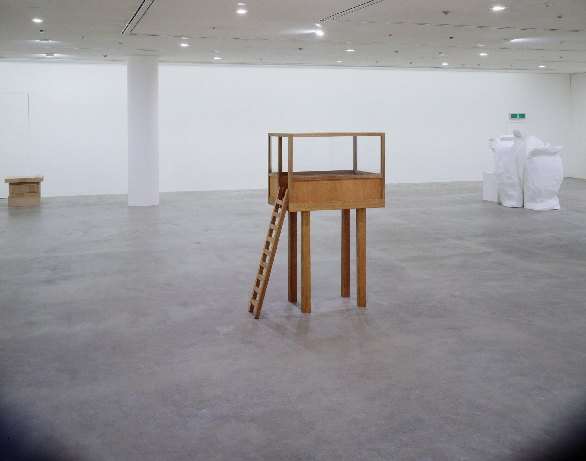
Q7. 재훈: 스스로의 큐레토리얼 여정에 있어 변곡점이 되었던 에피소드들이 궁금합니다. 일례로 이번 전시의 자기 소개 글에서는 본인의 큐레토리얼 실천이 ‘여성적 글쓰기’라는 이론 혹은 담론에 관한 것이라 위치지으셨는데, 이렇게 지정하게 된 때의 이야기 따위가 궁금합니다.
유승아: 여성적 글쓰기를 큐레토리얼 방법론으로 삼는다는 말을 처음으로 쓰기 시작했던 시점은 《마야》를 만들던 무렵이었어요. 제가 ‘글쓰기’라는 단어에 매료된 이유는 저만이 할 수 있는 전시 언어를 궁리하고 발명하는 일에 관심을 가졌기 때문이었던 것 같아요. 기획자로서 제가 지닌 무기가 글이라는 생각을 할 때도 있고요. 한편 ‘여성적’이라는 단어에 관해선 본질적인 성질을 가리키는 말로 이해하고 있지는 않아요. 오히려 저는 김혜순 시인의 말을 떠올리는데요, “주변적인 존재성에 대해서 그것을 포함하는 어떤 포지션을 여성이라고 생각하고 여성이라고 말하는 겁니다. 가장자리, 주변의 자리에서 세상을 보고 말하는 것이 여성의 모습이라고 생각하는 것입니다.”
또 제가 특히 좋아하는 것은 여성적 글쓰기라는 개념을 처음 제시한 엘렌 식수의 태도인데요. 식수는 여성적 글쓰기를 하나의 정의로 설명하지 않아요. 대신 클라리시 리스펙토르 같은 작가들의 글을 통해 이런 감각이 여성적 글쓰기일 수 있다고 살포시 던져놓고 도망칩니다. 가장자리를 빙글빙글 돌며 정의를 놀이하는 것 같아요. 모호함, 분명히 정의내릴 수 없음, 가동성에 매혹되곤 하죠. 또 그 아리송함 때문에 저는 끊임없이 스스로에게 질문을 하고 제 나름대로의 답변을 내려야만 하는 순간들에 가닿는데요. 새로운 질문을 던지고, 나름대로의 답을 찾고, 좌절하고, 또다시 질문하는 것. 정의하기를 우회하는 그 과정 자체가 저에게는 하나의 방법처럼 느껴져요. 큐레이팅도 결국은 매번 다른 시공간에 놓여 질문을 만들고, 수정하고, 주저하고, 장면을 찾는 일이잖아요. 저는 그런 과정 자체를 존중하고 있어요. 기획자로서 제가 믿는 태도와 가치로서도 굉장히 중요한 부분을 차지하는 것 같고요.
여성적 글쓰기에 매료되었던 또 다른 이유는 식수가 그 어떤 여성주의 사상가보다도 죽음 가까이에서 사유했다는 점 때문인 것 같아요. 『글쓰기 사다리의 세 칸』이나 『아야이! 문학의 비명』을 읽으면 그런 태도가 잘 드러나요. 사라진다는 것 다시 말해, 존재의 한계를 신뢰한다는 것은 분명 용기라고 불릴 만한 태도를 간직하고 있다고 생각해요. 전시라는 매체의 특성과도 맞닿는 부분이 있고요. 전시 역시 결국 사라짐으로써 완성되는 매체잖아요. 그 지점에서 여성적 글쓰기와 전시라는 매체가 거울상을 이룬다고 느껴서, 자연스레 설득된 것 같아요.
Q8. 재훈: 꿈이 무엇인가요?
유승아: 용기를 주는 사람이요. 저는 용기를 주는 사람이 되고 싶어요.
Q9. 재훈: 최근에 일본 여행을 다녀오신 것으로 보았는데, 어떠셨나요? 마음껏 뽐내실 기회를 드리겠습니다.
유승아: 교토에 다녀왔어요. 여름의 생명력을 고도로 느끼면 여름이 비릿하게도 느껴지는구나, 생각했습니다. 그리곤 여름을 만들고 싶다는 생각을 했어요: 여름을 빚다 여름을 주무르다 여름을 내려오게 하다 여름을 오리다 여름을 선물하다: 갓 태어난 듯한 자연의 연둣빛, 비릿한 투명함, 흙 묻은 채로 먹었던 무화과의 풀향 같은 것들을요.
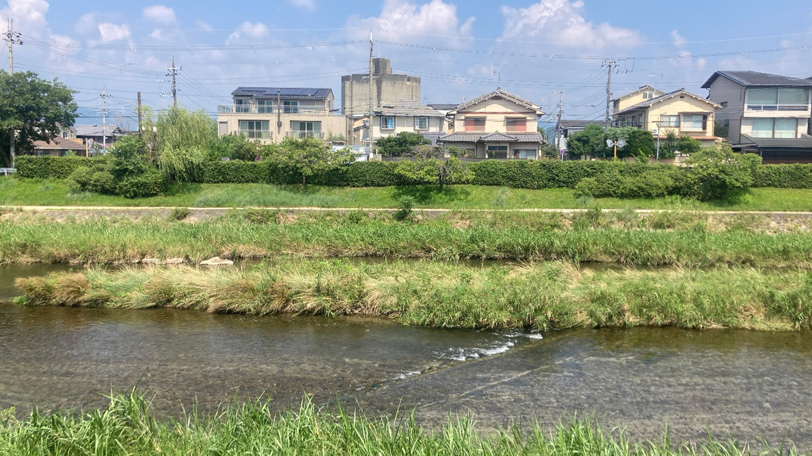
Q10. 재훈: 올해의 남은 계획 혹은 다음 프로젝트에 관한 예고 부탁드립니다.
유승아: 가까운 미래에 가학적으로 섬세한 전시를 만들어 보고 싶어요. 굳이 왜? 라고 질문할 만한 장치들을 의도적으로 시도해보고 싶어요. 숨 막힌 통제 가운데 아름다움이 흐르는. 그런데 가학적인 섬세함이 설득력을 갖추면 모든 것이 이해되는 순간이 찾아오더라고요.
또 다른 하나는, 생명력. 야생을 열고 싶다. 여름 열음 열리다 씨앗이 마카베아의 영원...
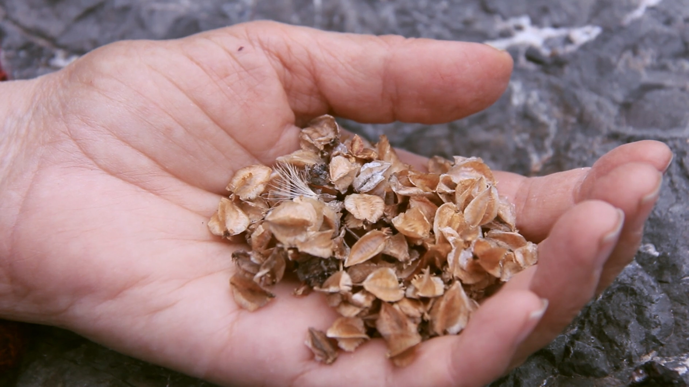
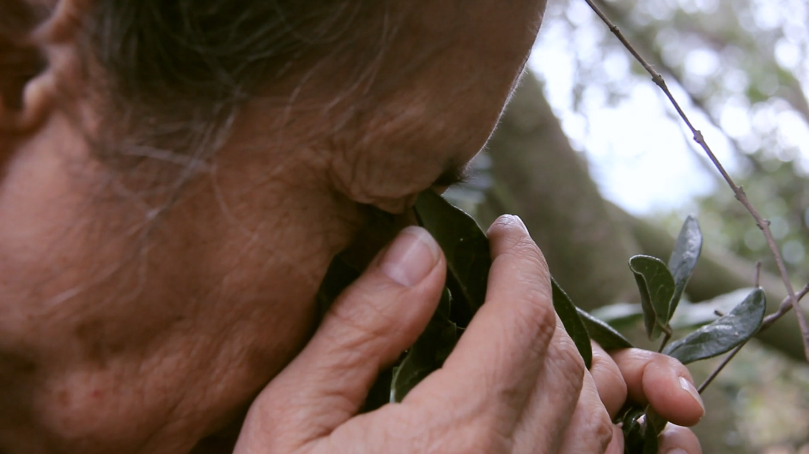
유승아
유승아는 기획의 방법론으로 ‘여성적 글쓰기’를 실험하며, 이를 통해 가능한 미학적이고 정치적인 측면을 탐구해 왔다. 언어로 명백히 설명할 수 없는 차원의 앎, 무의식적이고 감각·지각적인 차원, 비선형적인 시간성과 같은 ‘여성적 글쓰기’의 주요한 특징을 큐레토리얼의 방법론으로 삼아, 이 세계의 관습적인 작동 방식을 끊임없이 의심하는 힘, 기존의 시야와 전혀 다른 새로운 앎의 방식을 조형한다.
@a__uoy